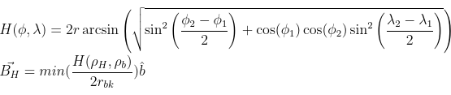

|
A study was performed to identify optimal locations to open a diner catering to the hipster demographic in Brooklyn, NY. Brooklyn was algorithmically tessellated into a hexagonal grid of neighborhoods. Foursquare's Places API was used to fetch data on a set of relevant venues in each neighborhood. Neighborhoods were clustered with DBSCAN to identify neighborhoods of low hipster-density. A cost-function was defined to optimize the ratio between the target demographic and competitive venues. Four locations of were identified to a position within 600m.
Brooklyn NY's estimated population of 2.6 million yields one of the most diverse and competitive markets for the food service industry in the world. Of Brooklyn's most affluent denizens are the members of the contemporary hipster subculture. According to Wikipedia, the term hipster is "mostly associated with perceived upper-middle-class white young adults who gentrify urban areas." The contemporary hipster is a subset of the Millenial generation which makes up 27% of the population and contributes $1.3 trillion in annual consumer spending. Hipsters have considerable purchasing power. Therefore, it is advantageous for entrepreneurs tapping into this market to accurately determine locations conducive to their venture.
The data required is the the location and type of venues, both hipster and competitive, in Brooklyn. This project aims to find locations where the target demographic is and competition is not. Further, an attempt is made to prefer locations that are located near major transportation infrastructure such as the Brooklyn, Manhattan, and Williamsburg Bridges.
The venue data is the largest component of the project on a storage size basis. For each neighborhood, it contains information for each venue. The data provided by Foursquare for venues include a unique ID, the name, its geographic coordinates, a category indicating type, as well as the distance between the queried point and the venue in meters. For example the category might be "Tire Shop" or "Fast Food Restaurant." This category data is used to identify competition for the proposed diner such as cafes. In addition, venue categories were used as an indicator for neighborhoods that contain the target demographic.
The second aspect of the data concerns the categorical values from the Places API. It is the case that a single venue may belong to multiple categories. For example, Whole Foods Market may belong to the "Organic Grocery Store" category and the "Grocery Store" category. For this reason, when a request was sent for organic grocery stores the venues returned may or may not include the category "Organic Grocery Store." To remedy the case of secondary categories, a list was compiled of all the categories returned by Foursquares Places API when queried with the venues defined as indicators for the presence of the target population. If a venue's category was on this list, it would be considered an indicator of the presence of members of the hipster subculture.
Features were selected to capture information related to these characteristics. In an effort to indicate the presence of members of the hipster subculture, specific categories of venues were queried. These venues are the following:
| Organic Grocery Store | Bike Shop |
| Indie Movie Theater | Flea Market |
| Diners | Coffee Shops | Cafes | Breakfast Spots |
| Burger Joints | Sandwich Places | Greek Restaurants |
It is self-evident that the location of a neighborhood will be critical in determining where to place the proposed establishment. All locations in the study are communicated in latitude and longitude until the final results are given. In the results section, the coordinates of locations are translated to a street address.
The target region of Brooklyn has been divided into 183 circular areas with a radius of 600m. Each circular area, referred to as a neighborhood, has been assigned a neighborhood number to uniquely identify it. Figure 1 is a map of the target region which shows the boundaries of each neighborhood in this study. Venues, both indicative of hipsters and the competition, were fetched from Foursquare for each neighborhood. In total, data from 3024 venues were collected.
Figure 2 is a sample of the data for neighborhood number 146. There are multiple columns in 2 The "hood_no" column indicates to which circular neighborhood, described in figure 1, the venue belongs. There is a column to hold the primary category which described the venue. As mentioned above, it is possible that a venue belong to more than one category. The "name" column is self-explanatory. The "coords_venue" parameter holds onto the geographic coordinates for each venue measured in degrees North and West. "Distance" describes the displacement of the venue from the neighborhood of corresponding neighborhood number. Finally, there is a column to keep track of whether the venue is considered relevant to the target market or to the competition. All venues were plotted onto a map of Brooklyn in figure 3. profile
The map of venues suggests that there are more venues closer to Manhattan than Jamaica Bay. To get a better understanding of what is going on, a heat map of the venues indicating the target market was created.
Figure 4 shows the density of hipster venues in the target region. The density of hipster-venues varies throughout Brooklyn. This suggests that some areas will be more well-suited for a diner catered to this demographic. There is the greatest density of hipster venues in the regions between the East River and Jamaica Avenue as well as the Upper New York Bay and the Fort Hamilton Parkway. In the analysis portion of this study an attempt will be made to cluster neighborhoods together on the density of hipster venues. The goal of such a clustering will be to separate neighborhoods that have a low hipster density. It is likely that in the end of our study, a neighborhood indicated by this heat map will be recommended as suitable for the proposed diner.Correspondingly, a heat map was created to visualize the competition in the region.
Figure 5 shows the density of venues in competition with the proposed diner. The competition heat map suggests that competition is relatively consistent throughout Brooklyn. There may be slightly more competition in the regions found to have the greatest density of hipster-venues. A hypothesis test could determine whether or not these regions deviate enough from the mean to be considered significantly different from the overall population of neighborhoods. If the author had mor time, a hypothesis test would be conducted to confirm what the heat map is suggesting. It is now assumed that the profile of regions varies with respect to the amount of hipster venues. Each neighborhood holds a unique location in venue space.
To locate a neighborhood in venue space, a vector composed of the quantity of each type of category is used.
Hipster-space is a subset of venue-space and includes only the categories defined as indicators of the presence of members of the hipster subculture.
An array was created to hold the quantity of each type of hipster venues for each neighborhood.
Each neighborhood had the z-score computed for each type of hipster category.
The greater the z-score for each of the hipster categories within a neighborhood, the more likely that there is a presence fo hipsters in the neighborhood.
Below is a sample of the array containing the vectors for four neighborhoods.
| Neighborhood | Bike Shop | Flea Market | Indie Movie Theater | Organic Grocery |
| 143 | 0 | 0 | 0 | 0 |
| 144 | 1 | 0 | 1 | 0 |
| 145 | 1 | 2 | 0 | 0 |
| 146 | 0 | 2 | 2 | 0 |
Histograms were created to visualize the z-score frequency of the hipster-indicating venues.
| Bike Shop | Flea Market | Indie Movie Theater | Organic Grocery | |
| 0.699 | 0.279 | 0.213 | 0.126 | |
| 1.246 | 0.766 | 0.623 | 0.433 | |
| Median | 0 | 0 | 0 | 0 |
| Mode | 0 (117) | 0 (146) | 0 (157) | 0 (164) |
| Skew | 2.327 | 6.175 | 4.052 | 5.146 |
DBSCAN created four clusters from the data. The number of neighborhoods in each cluster is given as follows:
A map of the clusters generated is visualized in figure 8. Each neighborhood is represented on the map by a circle of radius 600m. The color of the circle represents the cluster membership for that neighborhood. Each color was generated algorithmically to give maximum distinction between colors. For a number of clusters less than seven, this strategy gives visually distinct results. For a large number of clusters, a different visualization strategy must be employed.
It was necessary to calculate the closeness of both hipster venues as well as competitive ones.
To mirror this fact, venue space was subdivided into hipster-space and competition-space.
Hipster-space contains the coordinates, in number of hipster-type categories, for all neighborhoods.
Competition space is then defined similarly for all types of category that are not those designated to be indicative of hipsters.
A proximity score was then calculated to reflect the number and proximity of both hipster venues and competitive venues for each neighborhood.
The Haversine equation was used to calculate the distance for each neighborhood and each of the three bridges.
The Haversine equation, given two pair of coordinates in degrees North and West, calculates the great-circle distance between the two points.
Of the three distances for each neighborhood, the smallest one is included as a ratio to the diameter of the target region in the scoring vector as component
The Haversine Equation:

The bridge component is added to the proximity score to create the score vector.
An array of containing the components of the score vector for each neighborhood was created. Each component of the score vector describes one of the criteria set forth for the business problem. A sample of the score vector values for is shown below.
| 0. | 2.76836158 | 0.85471729 |
| 0. | 12.1819209 | 0.73645233 |
| 1.40451977 | 19.66892655 | 0.75877421 |
| 4.16271186 | 3.03615819 | 0.78680609 |
| 0. | 1.8779661 | 0.81996254 |
A cost function was then defined to value each neighborhood's score vector. The objective of the cost function is to rank neighborhood in their ability to satisfy the criteria of the business problem. It was arbitrarily chosen that the lowest values produced by the cost function would be the neighborhoods that best meet the criteria. The cost function was defined as follows:
There are three terms in the cost function. The first term is the negated hipster component of the score vector. Neighborhoods with a large hipster component are preferred in this way. The term is negated because of the decision to make the objective of the best neighborhood as small as possible. The second term of the cost function is the product of the hipster component of a neighborhood with the ratio of the neighborhoods competition component and the maximum competition component of any neighborhood. This term will penalize neighborhoods that have a large hipster component as well as a large competition component. Finally, the third term is related to the square of the bridge component. This term is added to select from multiple neighborhoods with similar competition and hipster scores the one closest to the bridges.
The value of the cost function was calculated for each neighborhood.
A hexadecimal color value was generated for each neighborhood based upon its cost-function value.
A list was created of the neighborhoods with the lowest cost function values.
The results were plotted onto the map in figure 9.
A list of ten neighborhoods with the lowest cost-function values was compiled. An inner join was performed with all clusters with the exception of cluster number 0. Including regions of open water, cluster 0 is a low-hipster density cluster. The following list was produced. Optimal locations are within 600m of the points specified.
Figure 10 marks the neighborhoods above on the DBSCAN cluster map.
The second model used was a purpose designed cost function. The cost function model valued each neighborhood according to the criteria set for by the business problem. Neighborhoods selected by this model are in different regions of Brooklyn. Remarkably, there is a correlation between the two models. Nine of ten neighborhoods with the lowest cost function value also clustered out of of the low-density cluster.
There is agreement between the models. Both models indicate the neighborhoods specified meet the criteria of the business problem. The locations specified are recommended for further review by stakeholders.